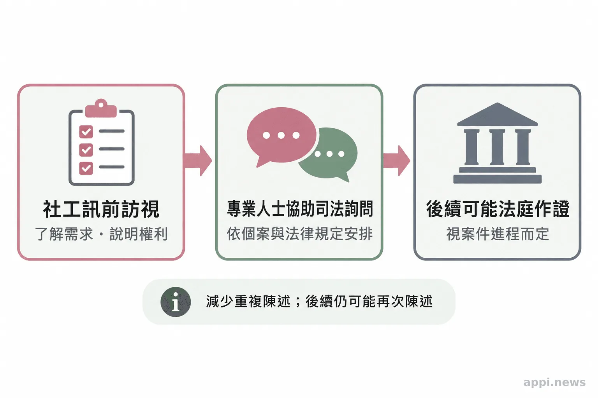
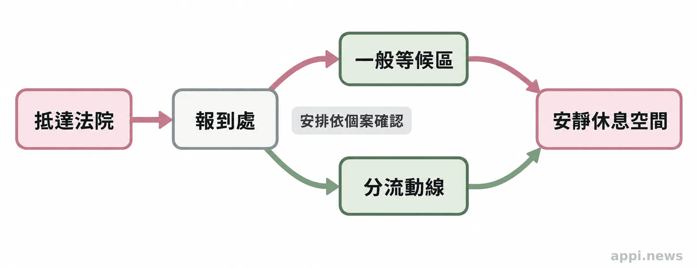

如何陪孩子面對減述作業與司法出庭
孩子進入司法程序後，減述作業、專業人士協助詢問與陪同出庭各有什麼作用？整理性侵害案件的適用範圍、可詢問的保護安排，以及家長與陪伴者能先準備的事。
作者：台灣微光希望關懷協會理事長 林秀霞
孩子進入司法程序後，家長常掛心：孩子要說幾次？出庭會不會碰到被告？台灣減述作業以性侵害案件為主，透過跨機關聯繫減少重複詢（訊）問，但不保證只陳述一次，也不適用所有兒少被害案件。先了解制度與承辦窗口的職責。
一、減述作業如何減少重複陳述？
**衛福部的減述作業要點主要處理性侵害案件，目標是減少被害人重複陳述，並建立跨機關聯繫。**未滿十八歲、心智障礙被害人等依要點辦理；其他被害人可申請適用，社工訊前訪視評估不適宜或不必要者除外。
地方性侵害防治中心是聯絡中心，社工會進行訊前訪視、說明程序與權益，並依身心狀況及偵查需要，評估適合詢問的期間供司法機關參考。若有保全證據或逮捕現行犯等急迫情形，可能先詢問，再安排訪視。實際詢問次數仍視案件進展與司法程序而定。
要點規定被害人須填具同意書；未滿十二歲者由監護人或法定代理人同意，但其為加害人時例外。若錄音錄影使被害人無法自由或完整陳述，經社工評估後可不錄。家長可向社工確認細節，不必替孩子排演或追問案情。
衛福部《性侵害案件減少被害人重複陳述作業要點》明列的目標是「以減少被害人重複陳述」；要點同時設有適用條件與個別評估程序。
二、訊前訪視、專業詢問與出庭作證有何不同？
**訊前訪視是社工了解需求、說明程序的準備工作；專業人士協助詢問則是在司法詢問中依法律條件提供協助。**兩者都不等於法庭作證，也不能合併理解為「司法訪談一次完成」。
依《性侵害犯罪防治法》第 19 條，兒童或心智障礙被害人在偵查或審判中，經司法人員認有必要時，應由專業人士在場協助詢（訊）問。專業人士先評估溝通需求並提出建議，經許可後必要時可直接詢問。此制度與減述作業要點的適用條件不同，由承辦者依法判斷。

減述要點要求詢問原則上全程連續錄音錄影，並由社工陪同、提供情緒支持；專業人士協助詢問的評估與直接詢問過程也須錄音錄影。紀錄可供後續程序參考、減少重複詢問，但後續仍可能需要再詢問或作證。大人可向承辦者說明孩子的溝通與休息需求，不預先教孩子回答。
三、陪同出庭與隔離安排可以怎麼詢問？
**兒少性侵害被害人於偵查或審判時，除顯無必要外，地方主管機關應指派社工陪同在場並得陳述意見。**其他親友或孩子信賴的人，則須經被害人同意並符合法律條件。
第 18 條列出的陪同者包括法定代理人、親屬、家長、家屬、醫師、心理師、輔導人員、社工或被害人信賴的人；嫌疑人、被告或可能妨礙偵查者不適用。家長可確認陪同人選與孩子希望由誰支持。
第 19 條容許專業詢問採單面鏡、視訊設備或適當隔離。司法院也說明被害人避免與被告碰面的出庭方式。措施由司法機關依個案決定。庭前可詢問報到入口、等候區、休息空間與動線；孩子有長期服藥、慢性病或其他身心支持需求，應請專業人員評估並告知承辦窗口。

四、家長與陪伴者可以先準備哪些事？
**先找到承辦社工或司法機關聯絡窗口，再確認時間、空間、陪同與孩子的支持需要。**準備是為了讓大人和承辦人員更了解孩子需要什麼，不是要孩子反覆練習陳述。
- **存好聯絡方式：**確認承辦社工、檢察官或法院的聯絡窗口、庭期與報到時間，也問清楚臨時身體不適或情緒難以承受時該聯絡誰。
- **先問當天安排：**確認報到入口、等候空間、陪同者及可詢問的隔離或視訊方式，不替司法機關預設結果。
- **說明孩子的需要：**把孩子較能理解的溝通方式、用藥或慢性病情形、休息需求告訴承辦人員，必要時請相關專業人員評估。
- **安排庭後陪伴：**預留熟悉的大人陪伴時間，詢問社工或醫療、心理支持資源；孩子回來後先聽他願意說的部分，不急著追問細節。
向孩子說明時，可以用簡單、具體的話告訴他會去哪裡、可能遇到哪些大人，以及需要休息時可以向誰求助。若孩子表達不安，先聽並記下他的需要，再交由承辦社工或專業人員協助。一般民眾與志工不自行查案，也不替司法或社政單位做保護決定。疑似兒少受虐可撥 113 諮詢或通報；若有人身立即危險，請打 110。
五、常見問題
**先詢問承辦社工或司法機關，確認案件適用規定、陪同人選及出庭安排。**法律提供制度框架，個案仍須依規範、案件情況與專業評估處理。
常見問題
Q1：減述作業代表孩子只要陳述一次嗎？
不代表。制度目標是減少重複詢（訊）問；若案件偵查或審判有需要，仍可能再次詢問或作證。
Q2：陪同出庭一定是由家長陪同嗎？
不一定。兒少性侵害被害人原則上由地方主管機關指派社工陪同；其他親友或信賴的人須符合被害人同意及法律條件。
Q3：孩子擔心碰到被告，可以詢問哪些安排？
可向承辦社工、檢察官或法院詢問等候動線、適當隔離或視訊等方式，是否採用由司法機關依案件決定。
Q4：減述作業適用所有兒少被害案件嗎？
不適用所有案件。衛福部要點以性侵害案件為主要制度脈絡，其他詢問與出庭保護措施各有適用條件。
Q5：不清楚流程時可以先找誰？
可先聯絡承辦社工、地檢署或法院案件窗口；需要兒少保護諮詢或通報可撥 113，遇立即危險則打 110。
今天先存下承辦窗口的聯絡方式，列出孩子最想確認的三件事，再逐項詢問。大人把流程問清楚，孩子面對未知時就多一份支持。
參考資料
- 衛生福利部保護服務司（2026，頁面更新）。〈性侵害案件減少被害人重複陳述作業要點〉。https://dep.mohw.gov.tw/dops/fp-1287-14972-105.html
- 全國法規資料庫（法務部）（2023，修正）。〈性侵害犯罪防治法〉。https://law.moj.gov.tw/LawClass/LawAll.aspx?pcode=D0080079
- 衛生福利部（無日期）。〈性侵害防治〉。https://www.mohw.gov.tw/cp-190-234-1.html
- 司法院（無日期）。〈我是被性侵害犯罪的被害人，我想出庭，但是我不想與被告碰面，受到二次傷害，我該怎麼辦？〉。https://www.judicial.gov.tw/tw/cp-1303-2644-f67dc-1.html
- 法務部（2018-07-12）。〈檢察機關偵辦性侵害案件減少被害人重複陳述注意事項〉。https://mojlaw.moj.gov.tw/LawContent.aspx?LSID=FL010231
本文同步刊於 appi.news。